El nuevo secretario general advierte al partido de que no hay que " adormecerse en el triunfalismo ".
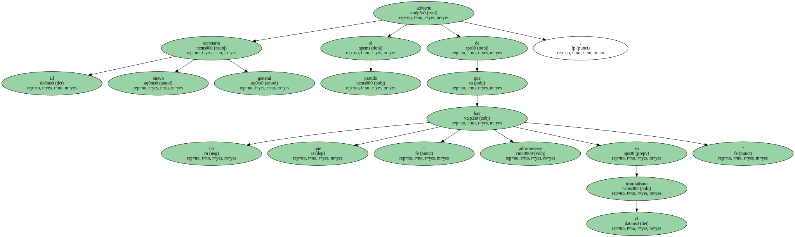El número 2 de los conservadores vincula su futuro al de Aznar y éste le recuerda que debe ser leal.
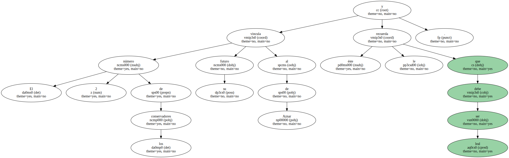El nuevo secretario general del Partido Popular , Javier Arenas , puso ayer los pies en la tierra a los compromisarios que durante casi tres días han vivido la euforia de su primer congreso como partido en el Gobierno.
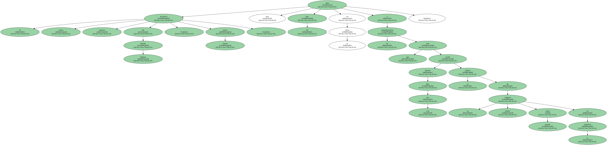El dirigente conservador opinó que los socialistas murieron de éxito , y recordó que hoy están en la oposición.
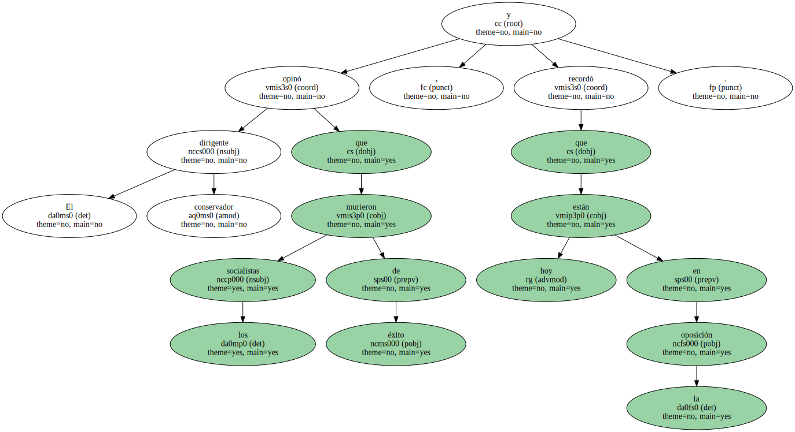De esa experiencia extrajo una lección : " Nunca podemos dejarnos adormecer por el triunfalismo y la autocomplacencia ".
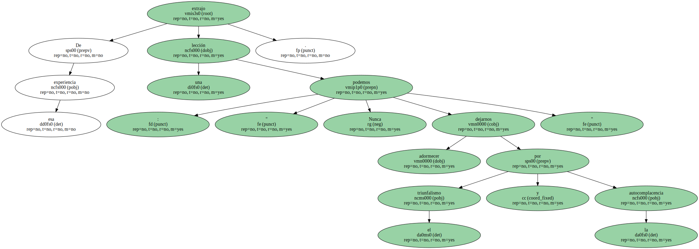Arenas , en su primer discurso como nuevo número dos del partido , vinculó su futuro político al de José María Aznar y ensalzó el trabajo de su antecesor , Francisco Alvarez-Cascos , cuya " entrega e inteligencia serán muy difíciles de igualar ".
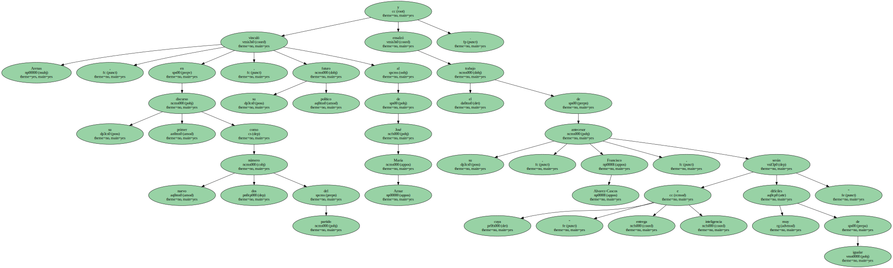Arenas expuso en 45 minutos un mensaje interno para los militantes populares que se han embarcado en el viaje al centro.
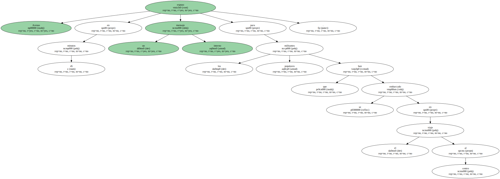En un discurso bien trabado y modulado , aseguró que su misión será la de acercar al PP a la mayoría de los casi 10 millones de electores - - " tenemos que ser el partido de la gente " - - , así como convertirlo en el " eje vertebrador de la España plural ".
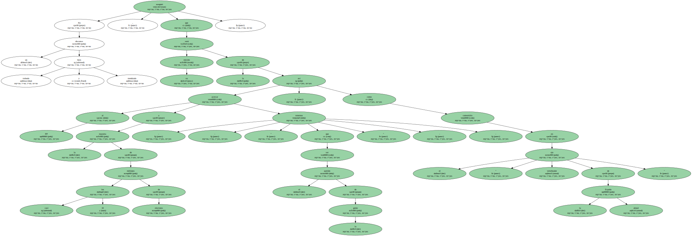El centro , según el nuevo secretario general , debe notarse no solo en las políticas , sino también en las " actitudes , talantes y en las formas de ser y estar en la vida política ".

El número dos del PP se presentó como una persona con profunda vocación política y pidió ayuda a todos desde la " sincera modestia " para cumplir con su tarea.
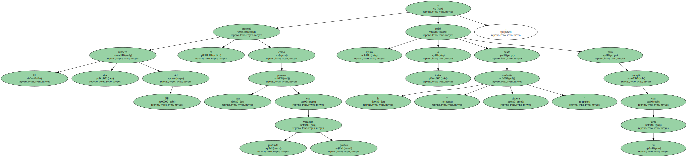Su objetivo inmediato será viajar este miércoles al País Vasco como respaldo a los militantes más allá de la solidaridad por ser objetivo de los violentos.
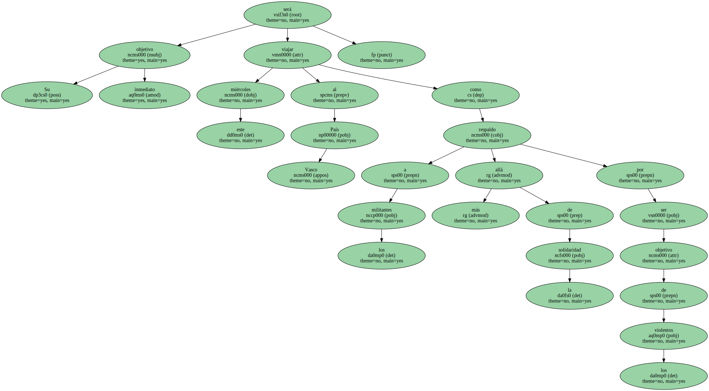Arenas dijo que las elecciones municipales de Junio son " una prioridad " del partido en Euskadi , por lo que hizo un llamamiento a toda la organización para " no fallar ".
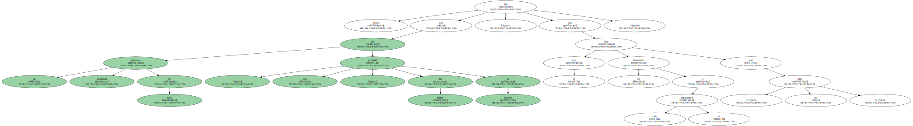Pero ayer , ante el auditorio , no pudo evitar una referencia a su tierra natal y cuna política.
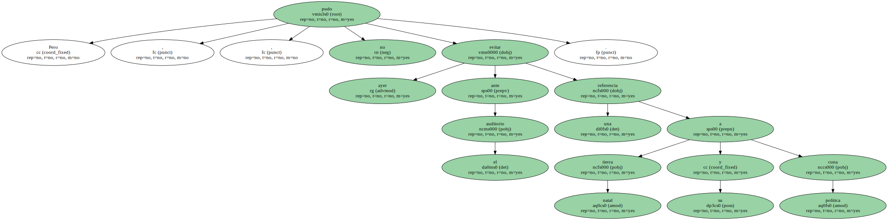" Nunca me iré de Andalucía - - dijo - - porque es para mí un proyecto ".
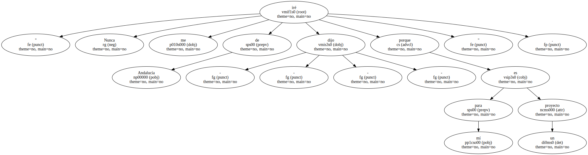Para consolidar una organización con vocación de gobierno , Arenas se dirigió a sectores concretos de la sociedad como las mujeres y los pensionistas , esenciales para lograr mayorías parlamentarias.
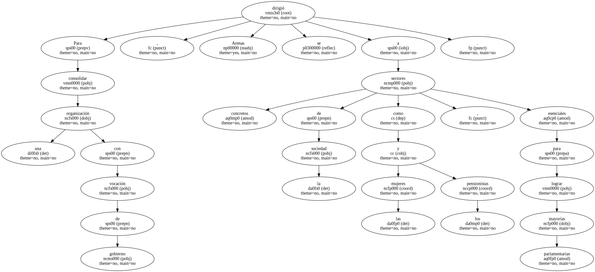Destacó el empeño de Aznar por incorporar mujeres a altas responsabilidades y criticó al PSOE porque sólo se le ha ocurrido presentar a una mujer a la presidencia del Senado cuando Aznar propuso a Esperanza Aguirre.
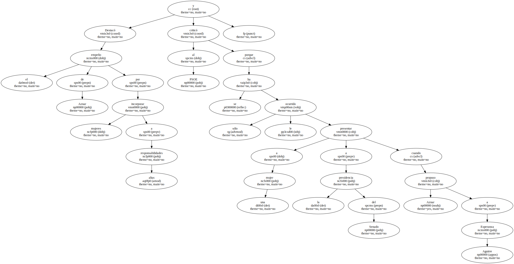A los jubilados les dijo : " Nunca les pediremos el voto a cambio de una pensión ".
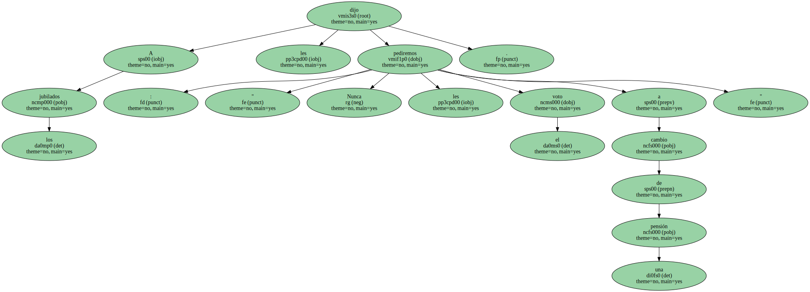El nuevo secretario general no se olvidó de los ataques al PSOE , que arrancaron los aplausos del auditorio.
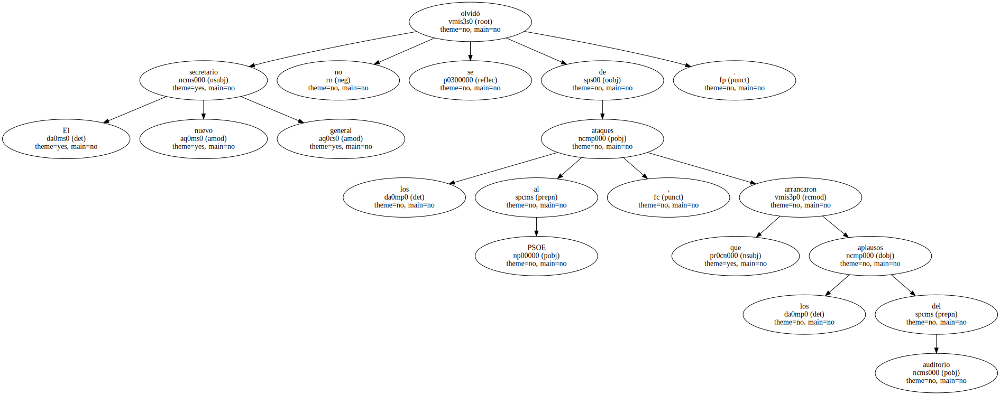Arenas ironizó sobre los comentarios críticos de los socialistas sobre la falta de liderazgo del PP.
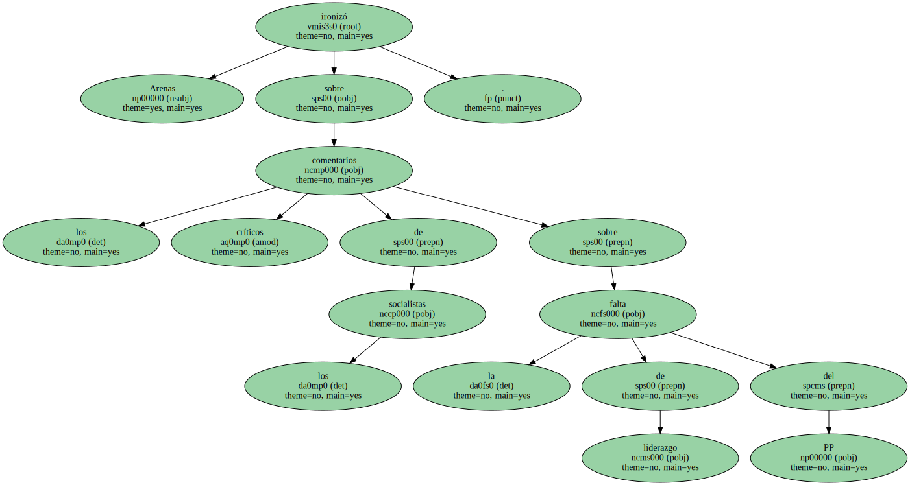" Respetamos a los que están contentos en la división interna , con uno , dos o tres líderes " , afirmó , y les pidió que respetaran al PP , " fuerte , unido y cohesionado ".
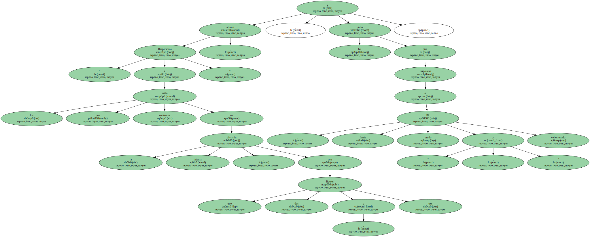Comenzó y terminó su discurso dando las gracias reiteradamente a muchos , pero especialmente a Aznar.
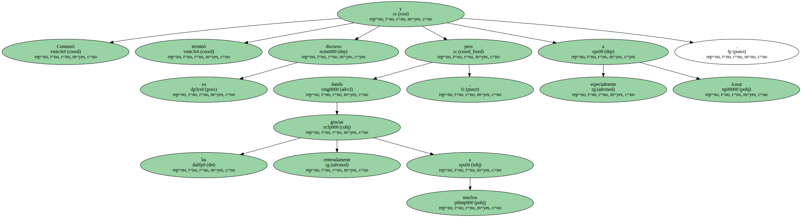" Nunca , nunca podré devolverte tanta confianza " , afirmó , para añadir : " Mi destino político va a estar marcado por ti ".
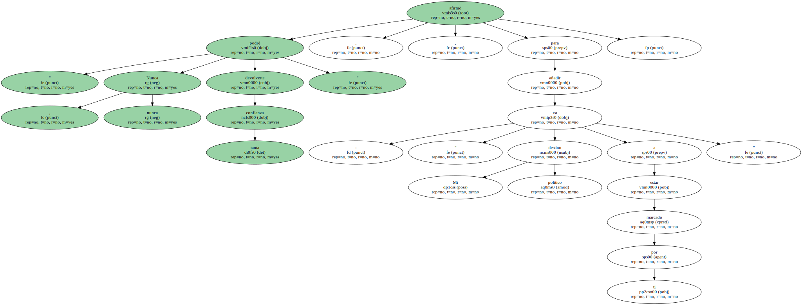Poco después , el presidente del PP le eximió de la deuda , pero le indicó por qué había sido el elegido : " No tienes que devolverme nada . Estás ahí por tu capacidad de trabajo y tu competencia . No debes olvidar tu lealtad al partido , al proyecto y al país ".
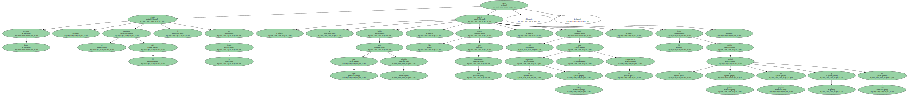